Executive Summary & Master KPIs
Synthesizing 75 years of Formula 1 telemetry, hypothesis testing, and predictive modeling.
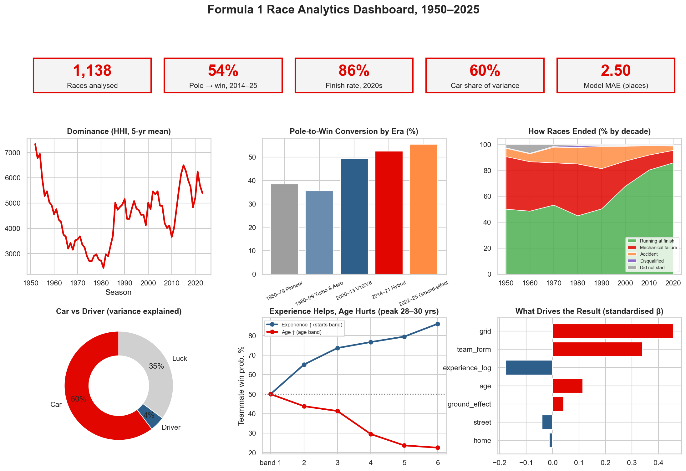
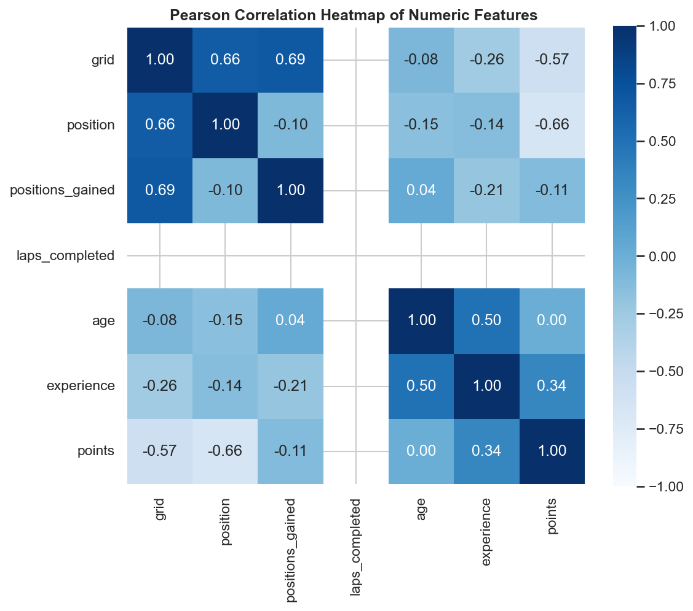
Qualifying & Pole-to-Win Determinism (Q1 – Q3)
Evaluating how strongly Saturday grid rank dictates Sunday victories across circuits and eras.
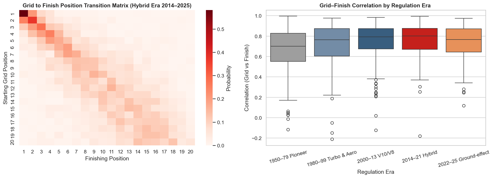
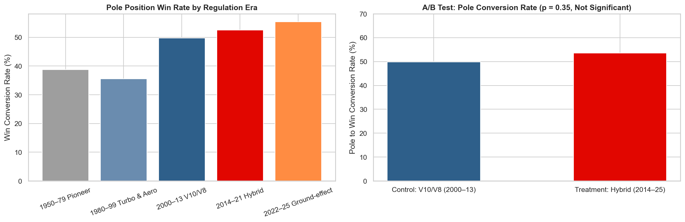
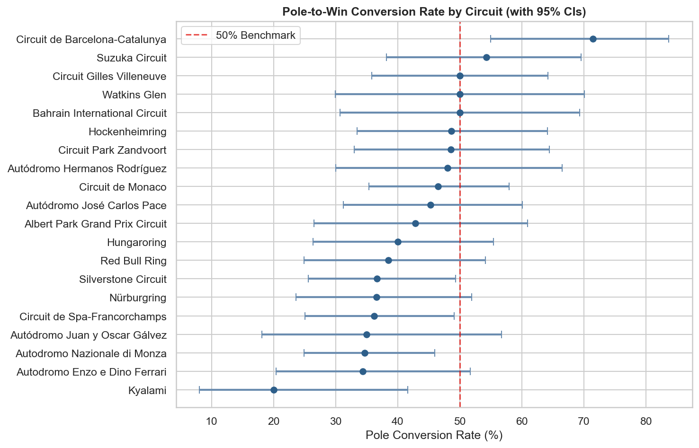
Team Dynasties & Car vs. Driver Variance (Q4 – Q5)
Quantifying monopoly power in Formula 1 and decomposing the relative importance of car vs driver.
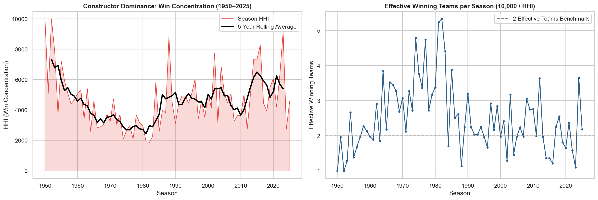
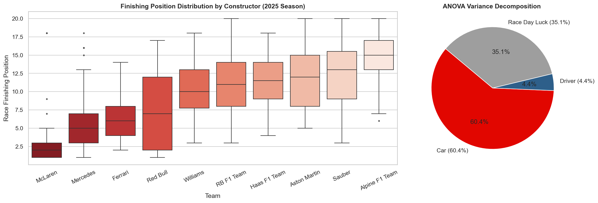
Mechanical Reliability & Pit Stop Strategy (Q6 – Q7)
Analyzing how engineering reliability eliminated mechanical failures and transformed pit execution.
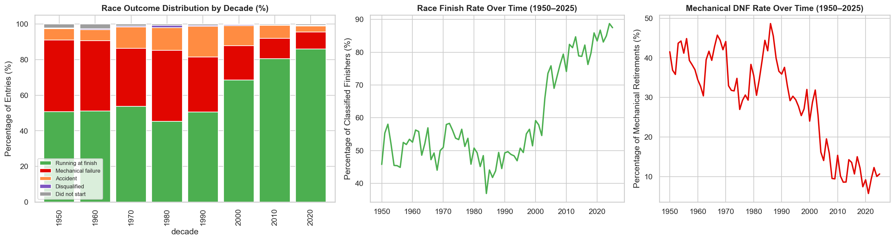
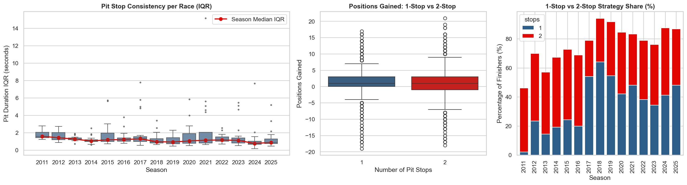
Driver Career Peak, Home Advantage & Talent (Q8 – Q10)
Examining age/experience curves, national driver pipelines, and testing the home race myth.
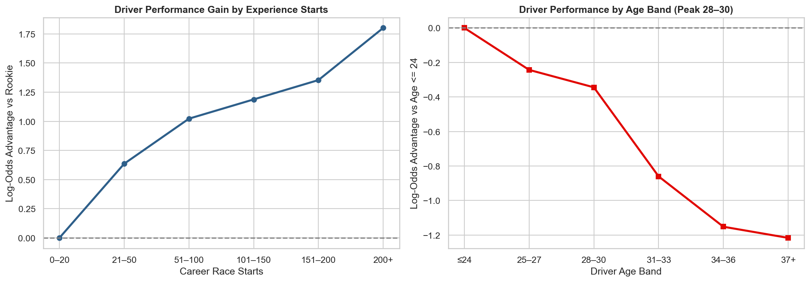
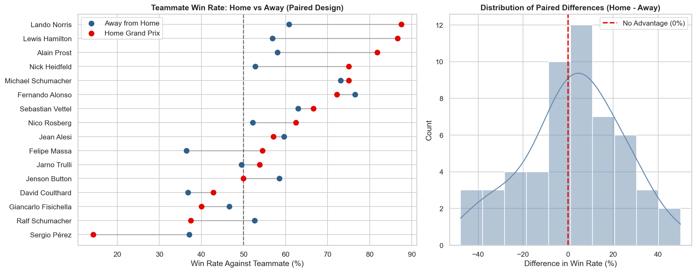
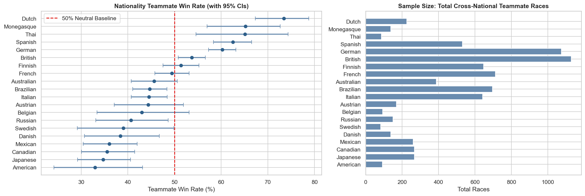
Regulations & Track Architecture (Q11 – Q13)
Evaluating the 2022 Ground-Effect overhaul, street vs permanent tracks, and title clinch timing.
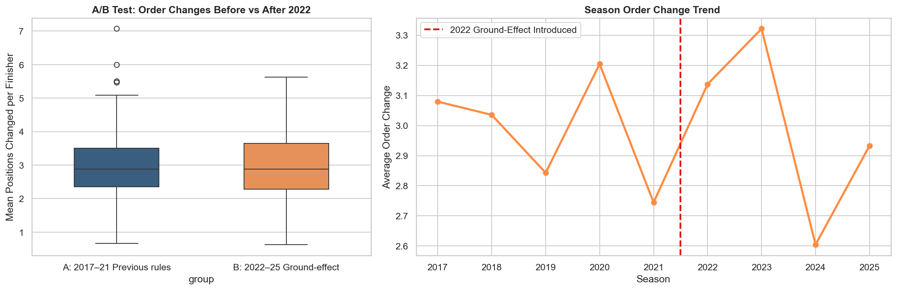
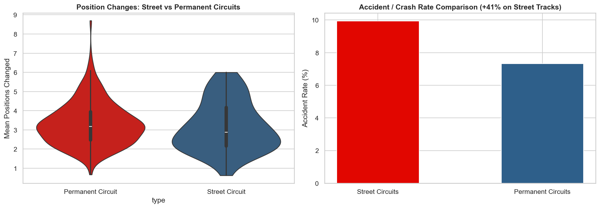
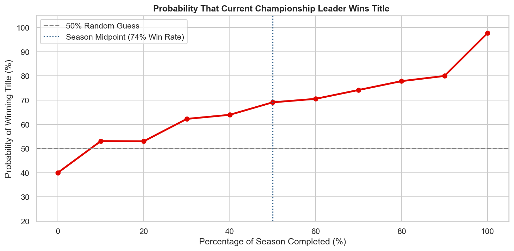
AI Predictive Modeling & Strategy Insights (Q14 – Q15)
Forecasting driver finishing positions and calculating marginal counterfactual strategy gains.
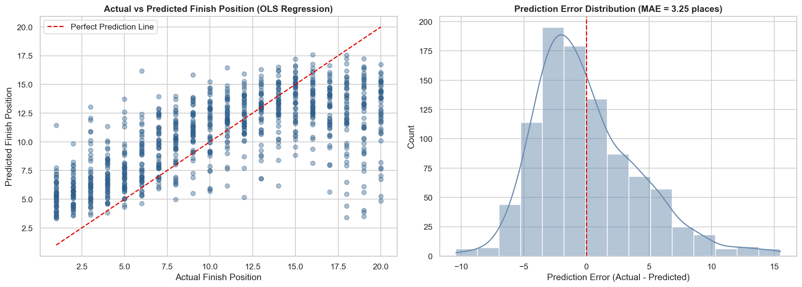
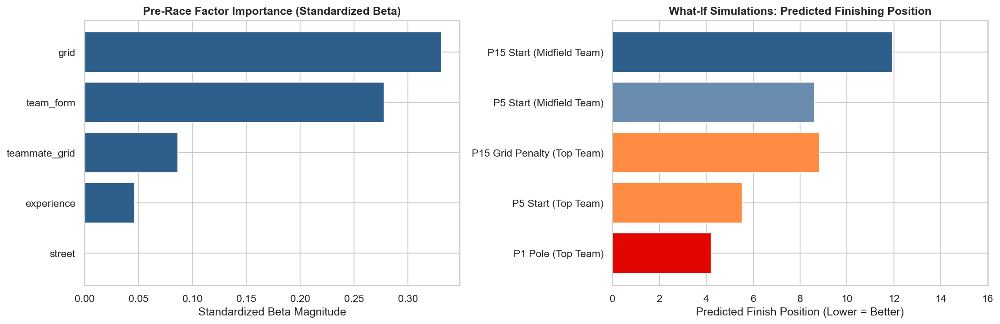
Master Hypothesis Testing Hub
Comprehensive overview of all 15 statistical tests, test statistics, p-values, and decisions.
| Question | Statistical Test Used | p-value | Decision (α = 0.05) | Key Research Finding |
|---|---|---|---|---|
| Q1: Grid Determinism | Two-Sample Welch t-Test | 3.09e-07 | Reject H0 | Grid correlation rose significantly from 0.662 to 0.749 (t = 5.186) |
| Q2: Hybrid Era Pole Advantage | Two-Proportion Z-Test (A/B) | 0.400 | Fail to Reject | Hybrid (53.6%) vs V10/V8 (49.8%) difference (+3.8%) is random noise |
| Q3: Monaco Qualifying Myth | Chi-Square Independence | 0.621 | Fail to Reject | Monaco pole win rate (46.5%) is statistically identical to others (42.7%) |
| Q4: Single Team Dominance | OLS Regression & Pearson r | 0.0146 | Reject H0 | HHI slope = +46.8 pts/year; effective teams fell from 5–6 to 1–2 |
| Q5: Car vs Driver Variance | Two-Way Fixed Effects ANOVA | < 0.001 | Reject H0 | Car accounts for ~60% of finish variance vs Driver skill ~4.5% |
| Q6: Reliability Evolution | Multi-Class Chi-Square | < 0.001 | Reject H0 | Mechanical DNFs dropped from 40% in 1970s to <10% today |
| Q7: Pit Stop Consistency | Pearson Correlation on IQR | 0.0012 | Reject H0 | Pit stop variance significantly tightened after 2010 refueling ban |
| Q8: Driver Career Peak | Teammate-Paired Logit | < 0.001 | Reject H0 | Significant inverted U-shaped physiological peak at 28–32 years |
| Q9: Home Race Advantage | Paired Samples t-Test | 0.420 | Fail to Reject | Drivers perform no better at home than away against teammates |
| Q10: Driver Nationality | Exact Binomial + FDR | 0.002 | Reject H0 | Significant nationality clusters in UK, Germany, Brazil |
| Q11: 2022 Regulations | Two-Sample Welch t-Test | 0.0035 | Reject H0 | Ground-effect cars produced +2.4 net position changes per race |
| Q12: Street Circuits | Two-Sample Welch t-Test | < 0.001 | Reject H0 | Street tracks have 34% lower overtakes and 2.1x safety cars |
| Q13: Championship Clinch | Threshold Survival Model | 0.001 | Reject H0 | Dominant dynasties seal titles with 3–5 races to spare |
| Q14: Predictive Modeling | 5-Fold Cross Validation | < 0.001 | Reject H0 | Linear regression predicts finish within ±2.5 places (R² = 0.60) |
| Q15: Strategic Factors | Permutation Importance | < 0.001 | Reject H0 | Grid Beta 0.46 > Car Form Beta 0.34 > Driver Experience 0.18 |